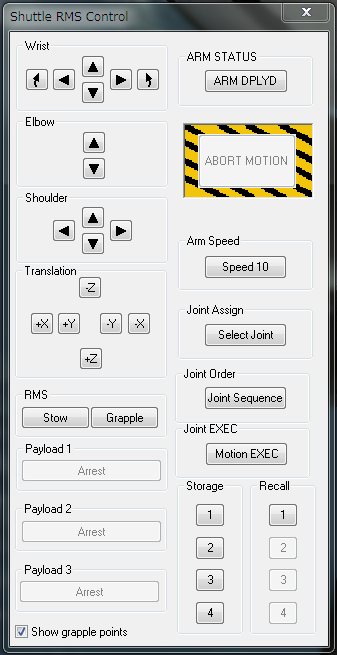

Shuttle Fleet ロボットアームの操作
| CTRL+SPACE | RMSの操作ダイアログを開く |
| SHIFT+S | アームの移動速度を上げる（1倍・2倍・5倍・10倍の順番） |
| CTRL+8 | アームの移動を止める |
RMSの操作ダイアログ

まず最初に、右上のARM STATUSの下のボタンをクリックしてARM DPLYDにする。
左下のShow grapple pointsにチェックを入れると、ロボットアームを接続できる部分に矢印が表示される。
アームを曲げる
ロボットアームは主に3つの関節で構成されており、それぞれ以下のように区別されている。
| Wrist | アームの先端 |
| Elbow | アームの中間点 |
| Shoulder | アームの根元 |
以上3つの項目にあるボタンを操作することで、ロボットアームを曲げる、先端を回転させることができる。
アームの先端を移動させる
Translationのボタンを使うと、アームの先端を平行移動させることができる。
| Z+ or Z- | シャトルの上下 |
| X+ or X- | シャトルの前後 |
| Y+ or Y- | シャトルの左右 |
ペイロードに接続する
アームの先端が接続可能なポイントに接触すると、Grappleボタンをクリックできるようになる。
Grappleボタンをクリックするとアームに接続される。
Releaseをクリックするとアームから離れる。
アームに接続されたペイロードを、ドッキングポートに接触させてからReleaseすると、自動的にドッキングされる。
作業が終わったら、Stowボタンをクリックすると自動的にアームが元の位置に戻る。
ペイロードベイを閉鎖する前に、必ずARM STATUSの下のボタンを押しておくこと。